TPC recrutement
+15K
talents dans la communauté
900+
startups et scale-ups accompagnées
6 ans
d'expertise Tech & Product
Des startups early-stage (First PM, Founding Engineer) aux scale-ups (VP Engineering, Head of Data), partout en France.
tpc-recrutement.com
Pourquoi TPC
+15K talents Product, Tech, Design et Data, du confirmé au C-level, qui suivent nos contenus et viennent à nos événements.
Étude de salaires 2026 (+10K répondants), masterclass avec les meilleurs acteurs de la tech, observatoire des organisations à l'ère de l'IA.
Des profils en poste, invisibles sur les job boards, qui nous répondent parce qu'ils nous connaissent déjà.
« Ce genre de profil, tu ne le trouves pas en postant une annonce sur un job board. »
Anthony Teixeira, Founding Product @ Leedflow
Nos clients
900+ startups et scale-ups tech nous confient leurs recrutements critiques.
Early stage
Seed, premiers recrutements
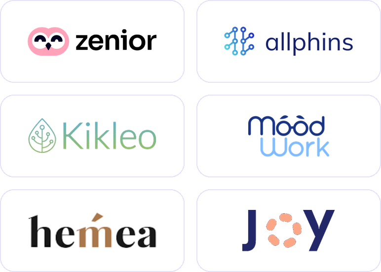
Startup
Série A à B, structuration
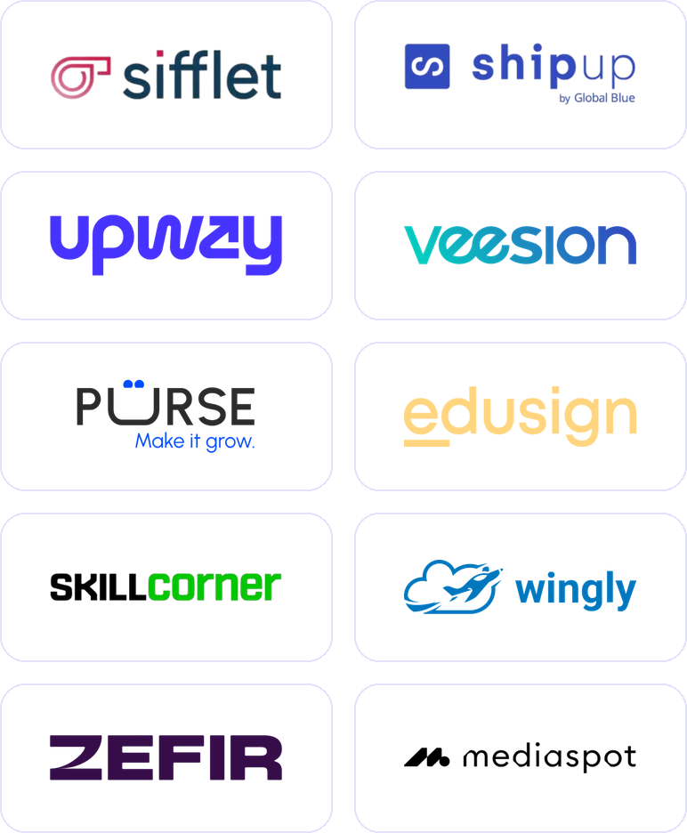
Scale-up
Hypercroissance, volume
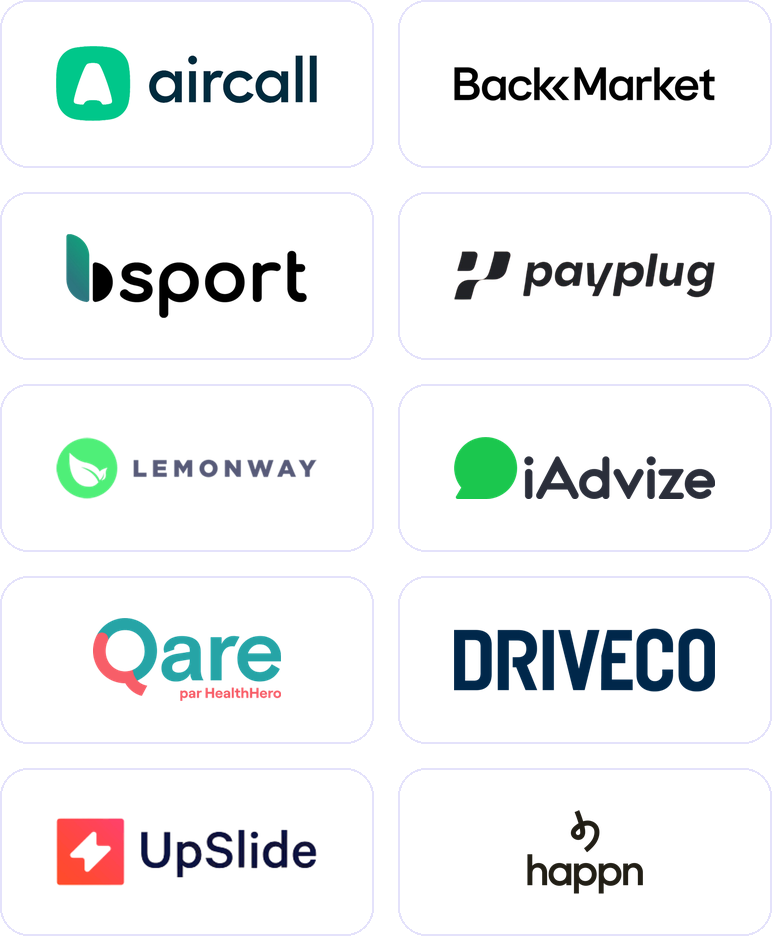
PME & grands comptes
Transformation tech & produit
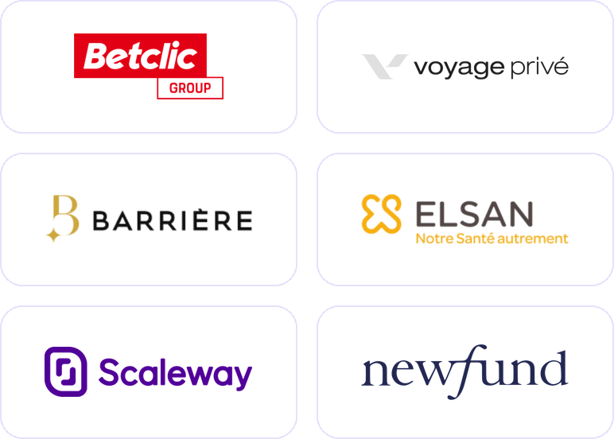
tpc-recrutement.com
Talents placés
Fabien Gomez
CTO (ex Meta / Microsoft)
Manel Benaissa
Senior PM @ Aircall
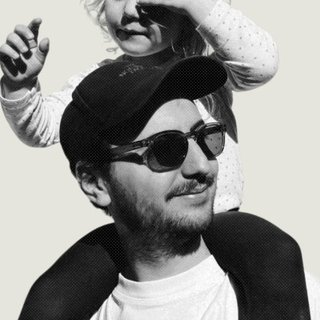
Paul-Antoine Campos
Head of Design @ Happn
Mickael Fine
VP Product @ Driveco
Aljosha Armitano
CTO @ Moodwork
Cyril Champier
VP Eng @ Decade
Matthieu Harbonnier
VP Product @ Worldia
Emmanuel Dissoubray
VP Product @ Wakeo
Alban Carmet
Lead Designer @ Vibe
Virginie De Sousa
Founding Product @ Linc
Source : mur des alumnis, tpc-recrutement.com
Cas clients
Poser les fondations : first PM, founding engineer, premier profil data.
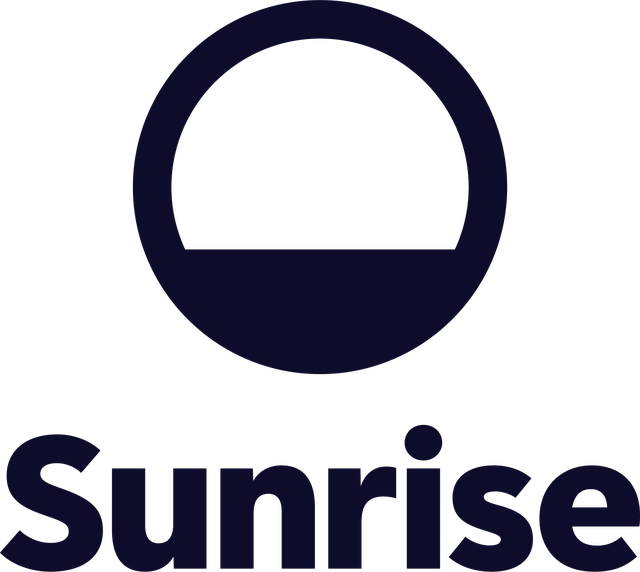
Senior Data Analyst, premier profil data
Aussi · Zenior : Founding Engineer + Founding Designer
Recruter le lead ou le manager qui organise et fait grandir l'équipe.
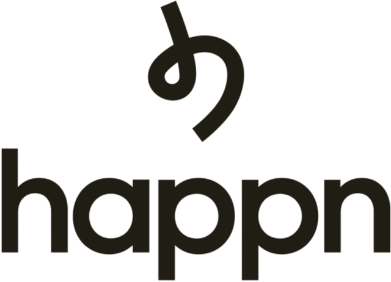
Head of Design sur un marché pénurique
Aussi · Driveco : VP Product
Recruter vite et en volume après une levée, sans casser l'existant.
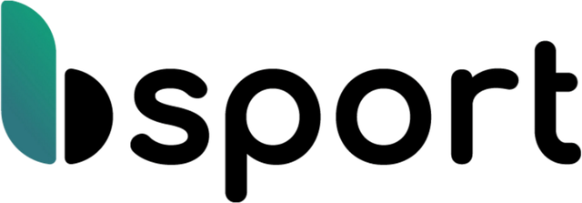
7 profils tech & data après la Série B
Aussi · Scaleway : 2 PM techniques en parallèle
Remettre un codir ou un scope clé sur les rails après un changement de cap.
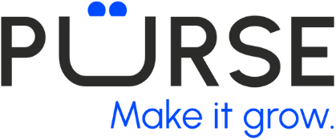
CTO + CPO à l'arrivée d'un nouveau CEO
Aussi · Joy : Senior PM qui reprend un scope au cœur du business
tpc-recrutement.com/entreprises/cas-clients
Par verticale
Leaders
CTO + CPO
Reconstruire un Codir à l'arrivée d'un nouveau CEO
Product
2 PM techniques
Deux postes en parallèle, sans dessaisir l'équipe interne
Engineering
7 profils tech & data
Passer de 5 à 20+ devs après une Série B
Design
Head of Design
Un expert mobile B2C sur un marché pénurique
Data
Senior Data Analyst
Créer le pôle data d'une scale-up qui double
tpc-recrutement.com
Méthode
01
1h30 d'échange avec le hiring manager et le recruteur TPC pour comprendre les enjeux, le profils du candidat recherché et définir une scorecard.
02
Présentation de 3 profils sous 7 jours qui matchent la scorecard et sont interessés par le projet.
03
Accompagnement jusqu'à la signature, et au-delà pour sécuriser l'intégration.
7 jours
en moyenne avant la 1re shortlist
45 jours
en moyenne de time-to-fill
98 %
de périodes d'essai validées
tpc-recrutement.com
L'équipe
Spécialisés, ce sont eux qui mènent le brief, qualifient et challengent les candidats.
Recruteurs Tech
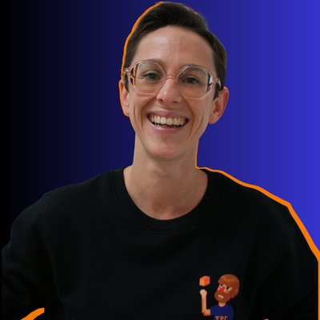
Juliette Pourtier
Tech Recruiter Senior
Hugo Demon
Tech Recruiter Senior
Tech & Produit
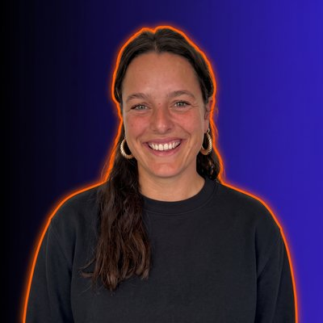
Marie Averseng
Tech & Product Recruiter Senior
Amandine Bondono
Tech & Product Recruiter Senior
Recruteurs Produit
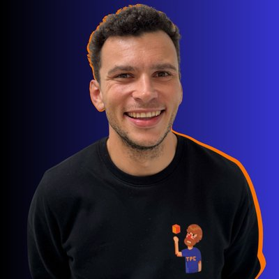
Gaspard Hirardot
Product Recruiter Senior
Manon Cohendy
Product Recruiter Senior
tpc-recrutement.com
Tarification
25 %
De sucess fee
indexé sur le salaire annuel brut du candidat
Autres conditions
1
Validation du partenariat
2
Briefing 1h30 avec le hiring manager et le recruteur TPC dédié
3
Shortlist de 3 candidats sous 7 jours
tpc-recrutement.com